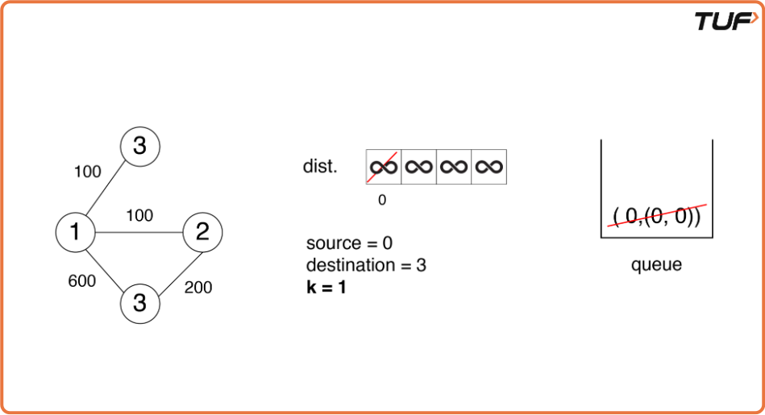
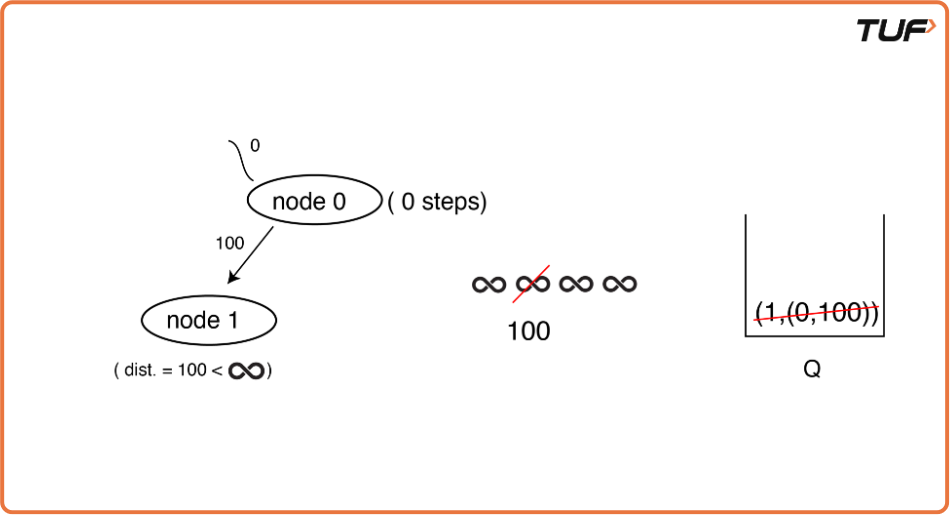
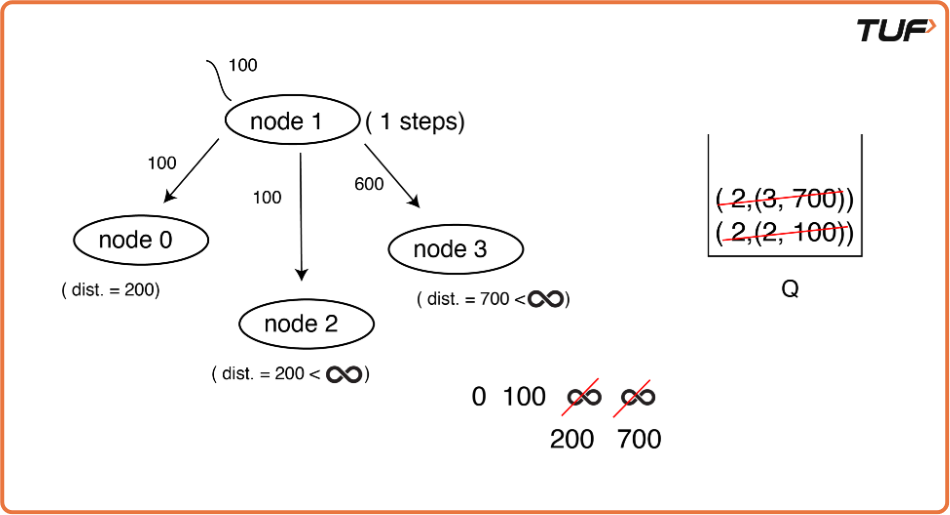
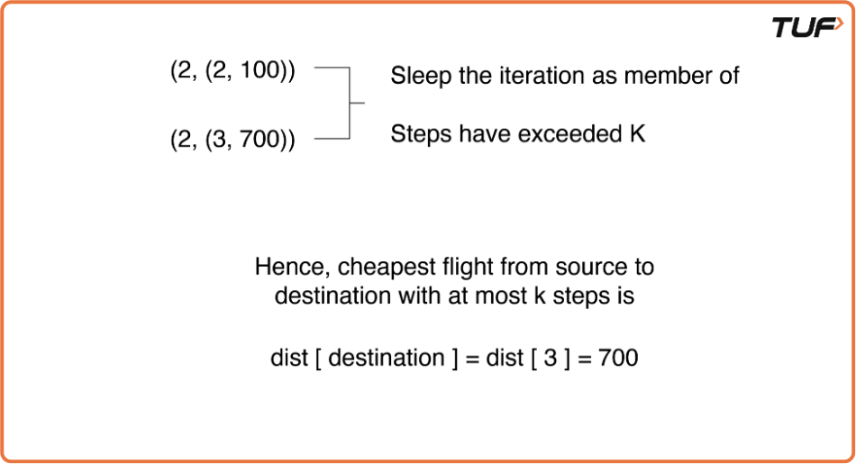

G-38: Cheapest Flights Within K Stops
Problem Statement: There are n cities and m edges connected by some number of flights. You are given an array of flights where flights[i] = [ fromi, toi, pricei] indicates that there is a flight from city fromi to city toi with cost price. You have also given three integers src, dst, and k, and return the cheapest price from src to dst with at most k stops. If there is no such route, return -1.
Examples
Example 1: Input: n = 4 flights = [[0, 1, 100], [1, 2, 100], [2, 0, 100], [1, 3, 600], [2, 3, 200]] src = 0 dst = 3 k = 1 Output: 700 Explanation: The optimal path with at most 1 stop from city 0 to 3 is through cities [0, 1, 3] with a total cost of 100 + 600 = 700. Note that the path [0, 1, 2, 3] is cheaper but is invalid because it uses 2 stops. Example 2: Input: n = 3 flights = [[0, 1, 100], [1, 2, 100], [0, 2, 500]] src = 0 dst = 2 k = 1 Output: 200 Explanation: The optimal path with at most 1 stop from city 0 to 2 is through cities [0, 1, 2] with a total cost of 100 + 100 = 200.
Disclaimer: Here is the practice link to help you assess your knowledge better. It's highly recommend trying to solve it before looking at the solution.
Approach
Algorithm
- Start by defining a queue that will store pairs of {stops, {node, dist}}. Here, 'dist' represents the distance from the source to the current node, and 'stops' keeps track of the number of nodes visited so far.
- Initialize a distance array with very large values (∞) for each node, except for the source node, which is set to 0, indicating that the source node has no distance to itself.
- Define the source and destination nodes, as these will be used to determine the start and end points of the search.
- Create an adjacency list to store all the neighbors for each node. This list will help to easily find the nodes that can be reached from a given node.
- Initialize the queue by adding the source node with a distance of 0 and a stop count of 0. This represents the starting point of the search.
- Begin the algorithm by popping the front element from the queue, which contains the current node along with the number of stops and the current distance from the source.
- Look at all the adjacent nodes of the current node (i.e., its neighbors).
- For each adjacent node, check if the new distance through the current node is smaller than the previously stored distance in the distance array and if the number of stops taken so far is less than the maximum allowed stops (K).
- If the new distance is smaller, update the distance in the array and push the adjacent node into the queue with the updated distance and incremented stop count.
- Repeat this process, popping the node with the smallest distance from the queue, checking its neighbors, and updating distances as necessary.
- Once the destination node is reached, return the calculated distance as the result.
- If the queue becomes empty and the destination node has not been reached, return -1, indicating that there is no valid path from the source to the destination within the allowed number of stops.




Code
#include <bits/stdc++.h>
using namespace std;
class Solution
{
public:
// Method to find the cheapest flight within K stops using BFS
int CheapestFLight(int n, vector<vector<int>> &flights,
int src, int dst, int K)
{
// Create the adjacency list to represent airports and flights as a graph
vector<pair<int, int>> adj[n];
for (auto it : flights)
{
adj[it[0]].push_back({it[1], it[2]}); // Add an edge from source to destination with the weight (cost)
}
// Create a queue to store the node, its distance from the source, and the number of stops
queue<pair<int, pair<int, int>>> q;
q.push({0, {src, 0}}); // Push the source node with 0 stops and 0 cost
// Create a distance array to store the minimum cost to reach each node
vector<int> dist(n, 1e9);
dist[src] = 0; // The distance from source to itself is 0
// BFS traversal with a queue to process the nodes
while (!q.empty())
{
auto it = q.front();
q.pop();
int stops = it.first; // Number of stops so far
int node = it.second.first; // Current node
int cost = it.second.second; // Cost to reach the current node
// If the number of stops exceeds K, continue to the next iteration
if (stops > K)
continue;
// Iterate over all the adjacent nodes (next destinations)
for (auto iter : adj[node])
{
int adjNode = iter.first; // Next destination node
int edW = iter.second; // Cost of the flight to the next destination
// If a shorter path to the adjacent node is found, update the distance
if (cost + edW < dist[adjNode] && stops <= K)
{
dist[adjNode] = cost + edW; // Update the distance
q.push({stops + 1, {adjNode, cost + edW}}); // Push the new node with updated stops and cost
}
}
}
// If destination node is unreachable, return -1
if (dist[dst] == 1e9)
return -1;
return dist[dst]; // Return the minimum cost to reach the destination
}
};
int main()
{
// Driver Code.
int n = 4, src = 0, dst = 3, K = 1;
// Flight routes and their costs
vector<vector<int>> flights = {{0, 1, 100}, {1, 2, 100}, {2, 0, 100}, {1, 3, 600},
{2, 3, 200}};
Solution obj;
// Call the method to find the cheapest flight
int ans = obj.CheapestFLight(n, flights, src, dst, K);
// Output the result
cout << ans << endl;
return 0;
}Complexity Analysis
Time Complexity: O(N), where the additional log(N) time is eliminated by using a simple queue rather than a priority queue, which is usually used in Dijkstra’s Algorithm. Where N = Number of flights / Number of edges.
Space Complexity: O(|E| + |V|), for the adjacency list, priority queue, and the dist array. Where E = Number of edges (flights.size()) and V = Number of airports.